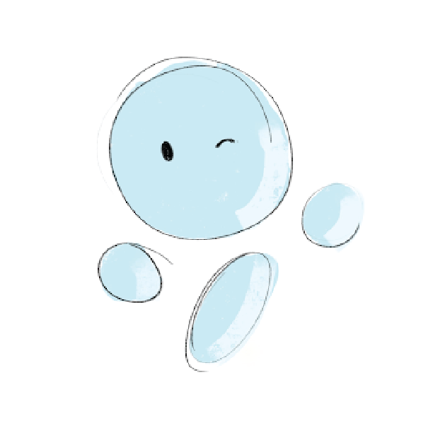

Esbie Design Process.
Hello, I'm Esbie
Your Electronic Study Buddy
Objective: As a part of Principles fo Interaction Design course at the Georgia Institute of Technology, me, and my group, were tasks to visualize the future of voice on college campuses. This assignment focused on create an experience, and outlining the micro interactions that happen during it. After brainstorming, my team decided to create a motivating studying experience, because we believe the application of voice to the academic lives of students and educational technology showcase much potential.
Result: A voice assistant to help college students study. Utilized Google’s Conversation Design
Guideline to design a system persona and user dialog to help students stay
motivated before and during a study session. Planned and conducted Wizard of Oz usability testing and heuristic evaulation.
Project Details
Aug 2019 - December 2019
- Group consisted of 4 Computational Media students.
- Followed Google's Conversational Design Guidelines
User Group Pool: Undergraduate/Graduate students, faculty, staff, guests
Brainstorming
Similar to a personalized therapist session. Individual walks into a room with sofa and chairs (what kind of chair(?), bean-bag, more comfortable chairs). This room is calming and institutes privacy for the user’s voice system executes advanced AI and machine learning, conforming to the user’s need the more the conversation grows. The design of the design of the room facilitates growth, even the visuals respond when new breakthroughs are made within the discussion.
Targeted towards students currently in collegiate or recreational baseball. The benefits of this device is it allows the user to train and develop when they are along. Fosters a sense of independence.
A positive study experience! Individuals use their companion to help them review topics and concepts for a specific course. Helps user organize and conceptuals information for themselves. Also fun to use. Small circular disc, when on desk project holographic image of a persona you create. Disc can scan/archive notes, and can clip on bookbag for easy mobility. When users are studying material it helps to verbalize the concepts and methods that they are reviewing. Having a voice companion reinforces the study experience not as a tenuous one, but a fun and explorative one! This also facilitates GROUP COLLABORATION, because people can share and introduce each others companion to one another when they study together.
This is a voice interaction that can be used for preparation of a presentation, lecture, or public speech. Students can use it to strategize proper wording for their presentations or other vocal scarios.
Assistive technology for students who need to manage regular use of medical aid along with their academic schedule.
Overview
Opportunity for Voice
According to the Bureau of Labor Statistics, American college students on average dedicate 3.5 hours towards studying outside educational activities. However, although students spend a considerable amount of time studying, academic studying is often described as a "stressful experience".
Research resources showed that 70% of students were already using a voice assistant, a software agent that can perform tasks using the technology of voice recognition. Considering this, voice assistance is a technology familiar to our user group, college students, and thus has the potential of being incorporated into their college experience.
With these backgrounds, we saw a great opportunity to seek possible areas of improving a studying experience using qualities of voice interaction. We used design research methods to better understand the future of voice on college campuses. To narrow our scope, we decided to explore the nature of “studying”. We defined studying as “when an individual devotes time and attention to acquire knowledge on a given subject to achieve a goal”.
Framing the Experience
Background
Voice Tech Inc. hired us to outline the opportunities for the future of voice user experiences on college campus. When executing this proposal, we started exploring key sectors of college life for students such as mental/physical health, academics, sports, hobbies, and leisure. We ultimately decided to further our research on the college study experience, and multiple facets that support or hinder its desirability.
During our exploration, we defined studying as “when an individual devotes time and attention to acquire knowledge on a given subject to achieve a goal”. We conducted user research to understand the state of art of studying and define the experience to incorporate voice interaction.
Methods
- Direct Observation
- Survey
- Interview
Defining a Studying Experience
By analyzing the data collected through user research, we were able to categorize the studying experience to different types of interactions depending on these factors. We used a concept map to extract keywords of voice interaction and studying experience from the research data.
- Motivation
- Frequency of studying
- Studying alone or in a group
- Communication
- Public vs. private places
- Ambient Signaling
We then categorized the students’ studying experiences based on the keywords:
Solely focused on their work. Not communicating with anyone and had headphones on for the majority of the time.
Continuously talked to the other person. Often reviewing concepts and information. Explained or clarified confusing concepts to one another, accompanied by feedbacks to one’s understanding of the concept ( “Good”, “Okay, it makes sense”).
Barely interacted with one another, except for when they ask each other questions. Enjoying each other’s company.
Studying in groups of more than two people, they reviewed the content together and shared study materials. Facilitated discussions in which they built on each other’s ideas.
Why Voice
The most important question for this design challenge was understanding why we ought to use voice interaction technology for the problem of studying experience.
One key finding from the interview was the absence of voice interaction in the user’s mental model of studying, which we learned from the interviews. Yet, there is an on-going research on conversational learning.
One research showed that the learners used distinct perspectives, interests, and styles to shaped their integrative effort to make sense of the idea while learning through conversations[7]. To add, another paper highlighted how the learning process can be influenced by the use of conversational tools as learning catalysts [9].
These viewpoints were relatable for college students who often need to study and internalize different types of information from multiple subjects. We wished to explore these advantages of conversational learning for the college student’s learning experiences.
The future of voice interaction lies in providing a desirable emotional experience to its users. A study [5] has revealed that the tone and language of a voice can impact the user’s perception and how perceptible the information they are about to listen to. Listening to cues signaling pressure and control leads to preferential and more in-depth processing mechanisms. The incorporation of nudge theory[6] and the usage of positive feedback in the dialog can also be beneficial to help users be motivated to embarking a task.
From here, we wish to utilize the tone and language of the voice assistant to change the student’s perception of studying subjects they are not motivated for. As confirmed by our research, academic studying is often a stressful, but necessary experience. We wish to improve the desirability of the study experience by making it positive and encouraging for students.
Through voice assistants, users can quickly and directly get information. A survey on Alexa[4] usage showed that the top feature users executed most were Alexa to check and search for various facts.
With access to various study materials granted by the students, the voice assistant would save student time’s on finding the materials they need to study. This will be advantageous for students who seek immediate feedback and on-demand access to class materials. It would lead to students’ effective use of time and attention, two crucial factors that distinguished the students’ good studying experience to an unpleasant one.
To add, time management skills have been identified as one indication of higher performance and lower stress and anxiety [7]. Accentuating the voice assistant’s capability on this aspect for the students may help reduce their stress level.
Ideation
Design Challenges
Based on the insights from the user research the, two main problems we decided to elaborate on for our design are: (click list elements for more info)
For the students, searching for the right study materials and organizing them is part of their studying process. However, the accessibility of the studying material influenced the student’s motivation to start internalizing the material.
Students found it very difficult to spend time and effort in studying subjects they lacked interest in. This was common for students’ worst studying experiences - a negative cycle of lacking motivation, not studying for the subject, getting a bad grade, and having to study more for the subject they don’t like due to their bad grade.
Upon ideating the voice assistant, we decided to focus on the Amy Persona out of our three personas. This was due to the fact that Amy had the lowest motivation level out of the three personas and a majority of the data was collected from this user type. Thus, we reframed the studying experience to students who do not study regularly, face challenges staying motivated to study, and study alone.
With these reframings in mind and taking the insights from research and strength points of a voice assistant, we ideated the voice assistant’s traits, key use cases, features, and dialog. We followed Google’s Conversation Design Process as a guideline for our ideation process.
During the ideation session, we created a system persona. We designed the personality of the voice assistant through generating a list of adjectives that describe a personality that would best enhance the desirability of the current studying experience for students.
Through the survey and interviews, a lot of students identified their studying experiences as stressful and unmotivating. Thus, we focused on adjectives such as “positive, cheerful, organized” to promote a more positive and supportive studying experience for the students.
To help users identify the voice assistant as an entity to communicate with, we named the system persona: ‘Esbie’. Esbie is the pronunciation of “e-s-b”, an acronym for an electronic study buddy, the direction we aim our product to take.
Key Use Cases/Scenarios
Click tabs to read more
Interviews and surveys with students showed that they wanted to be more efficient and productive with their time for or while studying. Inspired by this finding, we ideated interactions that would support users allocating specific times to study. This scenario illustrates how the user would schedule a study session at specific time blocks of a day with the voice assistant.
A common challenge for students was combatting low motivation and high stress due to it. This scenario shows how voice assistant can approach a user with low motivation and help the user to start and finish a study session.
One way students combatted low motivation was by studying at environments that they found inspiring and could focus best in. For instance, they sought out environments with some white background noise. This scenario demonstrates how the voice assistant suggests the users change their studying environment. It also highlights the voice assistant’s knowledge of both the user’s preference and the ability to suggest the best locations to study.
Features
Users can allocate specific time periods to set up study sessions with Esbie in hourly intervals. Based on the information on the user’s calendar, Esbie can suggest a time period at times the user is not occupied for the user could schedule a study session.
Esbie can remind the users of their study goals. Esbie records and saves the goal the user verbally stated when asked: “What is your study goal?”. This question is asked to the user when they schedule up a schedule session with Esbie. It can also reiterate the goals when asked to remind the study goal.
Esbie can suggest users places to study based on the user’s previous study location patterns by relating the time of the day and the subject the user studied.
Scanrios
Usability and Wizard of Oz Testing
With our low fidelity prototype, we recruited 4 undergraduate Georgia Tech students who met the criteria of one of our persona (Amy). They had difficulty staying motivated to study based and was the user group we were designing the interactions for.
One designer assisted the participants during the usability test for any questions or confusion. The facilitator read from a script to inform the participants of our objectives of the project, what Esbie is, its functions, and the user task they will be performing during the usability test.
We prototyped the system using AdobeXD and its built-in voice interaction prototype feature. Each interface looking like below was fed with user input the prototype would listen for and the output according to the input. The user interacted with the interface during the test.
Qualitative data was collected through observation, audio-recording of the session, and post-interview questions.
Demo Registration
The participants were asked to fill out a demo registration Google form. The form asked for the participants’ names, majors, courses they were taking, and times they usually studied. This information was collected by the designer to update the dialog in the prototype to create a personalized experience for our participants.
User Task
Participants were instructed to “schedule a study session with Esbie at a time you are available”. It included subtasks like the following:
- User selects the time and day of the week for a study session
- User selects the subject they are studying for
- User sets goals for the study session
Post Interview Questions
After completing the given user task, participants were asked a set of questions for the team understand how the experience of the interaction was for the participant.
1. How did you feel about having Esbie schedule your study sessions?
2. How was Esbie in the form of support and motivation?
3. Were there instances that you felt Esbie was annoying or irritating?
4. Are there certain things that you would prefer Esbie to say or ask?
5. What was your overall experiences with Esbie?
-
Evaluation
Dialog Ideation using Heuristics (What we learned)
The participants from the WOZ found the experience interacting with Esbie desirable. Nonetheless, we were able to identify some pain points when we analyzed the interaction using Nielsen’s 10 Usability Heuristics. These pain points were mostly applicable to iterating the dialog design of the system.
During WOZ test, we found some participants were more likely to give rapid-fire prompts. A user said that “I didn’t know if I just could say “hey Esbie” or more” versus “I thought I could say everything at once”. This was due to a mismatch in our concept model and the user’s mental model of how to provide information to schedule a session. Our interpretation was to receive information components of scheduling - time, subject name, and goal - one at a time. Thus, the interactions were planned as an array of questions. However, some participants gave all the three components of the information at once, and they were not presented with a way to exit the interaction or speed it up.
Our experience often limited the user’s control and freedom to end the interaction. The participants felt like they were only able to end the session when Esbie asked “Is there anything else I can do for you?”, which was only at the end of the conversation.
Adding on to that, users were also unable to go back to review their responses or undo their responses when they made a mistake. This gave them little control or freedom, which we wish to take into account in the future iteration.
To combat this, we added a command “Bye Esbie”, which the user can say to end the conversation at any given time. We also added a command “Esbie repeat” for the user to be able to repeat what Esbie has said.
Final Experience
Meet Esbie
Esbie is a voice assistant designed to provide a positive and motivating studying experience User’s interaction with Esbie will be encouraging, informative, and efficient, like talking to a peer counselor.
Product Design
In designing Esbie’s physical product, we focused on its portability and simplicity. The iterations were inspired by how students often study alone and wish to be detached from their phones while studying. To address that, we made Esbie small, compact, and portable so the user can carry it with them. To minimize distraction from interfaces, like the phone, we kept the physical device simple except for a button the user presses on to turn Esbie on and off and a color-changing surface to indicate that Esbie is listening to the user.
Esbie can schedule hourly study sessions with the user when said the command “schedule a study session”. If it has not all the information needed to schedule a study session, it will then ask what time they’d like to study based on the user’s schedule and to choose which subject from the list of courses the user is taking. Esbie will vibrate around the session time to remind the user.
Esbie can schedule hourly study sessions with the user when said the command “schedule a study session”. If it has not all the information needed to schedule a study session, it will then ask what time they’d like to study based on the user’s schedule and to choose which subject from the list of courses the user is taking. Esbie will vibrate around the session time to remind the user.

Adoption Challenges
People generally feel socially uncomfortable speaking out loud to voice products in public. This was one reason why we decided to reframe our experience of studying alone in private.
Interviewing students during dialog research further unearthed this discomfort as students voice that they “did not want to speak to it in public. Also, I tend to study alone”.
From interviews, we found that voice interaction is not included in the students’ mental model on how they currently study.
To be more specific, when studying alone, students barely engaged in a conversation with anyone. The only times they spoke was to themselves to verbalize and internalize the information.
Upon this state-of-art, our concern is how smooth the transition of introducing a conversation interaction before the students engage in their studying mental model would be.
Esbie can suggest users places to study based on the user’s previous study location patterns by relating the time of the day and the subject the user studied.